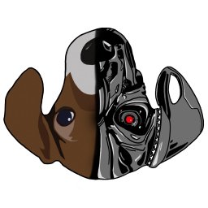
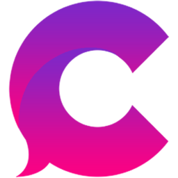

OBS browser source / no login
Twitch chat for OBS, with 7TV, BTTV and FFZ built in.
A browser-source overlay that shows your channel's chat with third-party emotes, 7TV name paints and badges from seven sources. Multistreaming? Add your Kick channel and both chats share one overlay. No login, no server of your own, no build step.
Open the builderEnter your channel, copy one URL, paste it into OBS.
Browser source · 450 × 700 · live demo
The frame runs the real overlay in demo mode: sample Twitch and Kick messages, with emotes and badges loaded from each provider.
@HelpfulMod what do I have to sign up for?
Nothing.
No login.
Chat is read through Twitch's and Kick's anonymous, read-only chat connections. They reconnect automatically.
No server of ours.
Everything is fetched directly by your browser or OBS.
No telemetry.
The overlay reports nothing back. The services it contacts are summarized further down.
No build step.
Plain HTML and JavaScript. Host it on GitHub Pages or run it from a folder on your PC.
@NewViewer do 7TV emotes work here?
Your channel's emotes, from all four places they live.
Twitch, 7TV, BTTV and FFZ emotes load for your channel and globally. Zero-width emotes stack on the emote before them, and FFZ and BTTV modifiers flip, widen, rotate and curse an emote. Add a 7TV or BTTV emote mid-stream and it shows up live, without a refresh.
- 7TV personal emotes appear only in their owner's messages.
- Cheermotes and Twitch chat GIFs are shown. GIFs load as Giphy's 200 px animated WebP.
- Turn a provider off with
emotes_7tv=0,emotes_bttv=0oremotes_ffz=0.
| Feature | Twitch | 7TV | BTTV | |
|---|---|---|---|---|
| Global and channel emotes | ||||
| Zero-width emotes that stack | no | |||
| Modifiers: flip, wide, cursed | no | no | ||
| Rotate modifiers | no | no | no | |
| Emote changes show up live | no | no | ||
| Personal emotes | no | BTTV Pro | no | |
| Cheermotes and chat GIFs | no | no | no |
@PaintedPal will my paint show up on stream?
Badges from seven sources. Paints on the names that have them.
Twitch global and channel badges cover sub tiers and months, bits, mod, VIP, founder, predictions and event badges. On top come badges from 7TV, FFZ, FFZ:AP, BTTV, Chatterino and Chatterino Homies, plus FFZ custom mod and VIP badges.
7TV name paints render as gradient or animated image usernames. The overlay also asks 7TV for each chatter's paint, so viewers on mobile get theirs too.
PaintedPal
a gradient paint
ShinyName
a repeating gradient paint
- Twitch
badges_twitch - 7TV
badges_7tv  FFZ
FFZbadges_ffz
FFZ:APbadges_ffzap- BTTV
badges_bttv - Chatterino
badges_chatterino 
Chatterino Homiesbadges_homies
Each source has its own switch. The two names above are drawn by this page as examples of paints.
@Lurker_Supreme what if someone subs?
Subs, raids and replies look like what they are.
Sub, resub, gift, raid and announcement notices get their own line, and a gift bomb collapses into one. Replies carry a header with the message they answer. When a mod times out, bans or deletes, the message leaves the overlay too.
/me messages and channel-point highlights are styled, first-time chatters can be highlighted with first_msg=1, and Shared Chat messages show the source channel's avatar and badges.
- resub notice · events=1
Lurker_Supreme subscribed at Tier 1. They've subscribed for 6 months!Lurker_Supreme: still here
- raid notice
25 raiders from Raider_Friend have joined!
- reply header · replies=1
@PaintedPal:this overlay looks cleanNewViewer: @PaintedPal same, love it
- /me
ShinyName does a little dance
- channel-point highlight
Lurker_Supreme: this message was highlighted with channel points
- deleted by a mod
Raider_Friend: deleted message
removed from the overlay
@Streamer I only have room for a bar.
A column beside the game, or a ticker along the edge.
Vertical stacks messages in a chat column. Horizontal runs them in a single row: new messages come in on the right, older ones slide off to the left, and a message longer than the source is cut off with an ellipsis.
Drawn to scale on a 1920 × 1080 canvas. These are the sizes the builder previews.
Browser source · 1920 × 100 · layout=horizontal · live demo, right-hand end
@HelpfulMod can you make the text bigger?
White text, soft shadow, transparent background. Change any of it.
Pick the size, the font (any Google Font or a stock Windows font), the shadow strength, a dark box behind each message, the alignment, the fade-out and the line limit. Every option goes in the overlay URL, and OBS's Custom CSS box can restyle the rest through stable class names.
Known bots such as Nightbot and StreamElements are hidden unless you set bots=1. hide_commands=1 hides messages that start with an exclamation mark, and block hides chosen users.
One line, four settings · actual size
size=small 18 px
NewViewer: hello!
size=medium 24 px
NewViewer: hello!
size=large 32 px
NewViewer: hello!
bg=60 a dark box
NewViewer: hello!
- overlay.html
- the overlay page
- ?channel=yourname
- your channel
- &size=large
- 32 px text
- &fade=30
- a message stays on screen for 30 seconds
- &bg=60
- a dark box behind each message
shown as typed
NewViewer: <script>alert(1)</script>
NewViewer: <img src=x onerror=alert(1)>
Chat can't run code on your stream PC.
Anyone can type in a Twitch or Kick chat, and emote names, badges and 7TV paints come from other people too. None of it can run code on your stream PC or change the overlay beyond the message it's in.
tests/security.test.js feeds hostile messages, emotes, badges and paints through the real code to keep it this way.
- Text stays text
- Messages, names, reply headers, emote names and badge titles are only ever inserted as plain text.
- Only https images
- Emote, badge, GIF and paint images must be https URLs. GIFs are limited to Giphy and 7TV paint images to 7TV's CDN.
- Validated styling
- Name and badge colors, and the colors you pick, must be hex colors. 7TV paints are rebuilt from checked numbers and colors.
- Zalgo text
- Piles of combining marks are cut to 4 marks per letter.
- Size limits
- Message text is cut at 1000 characters, a message draws at most 300 emote images, and one emote stacks at most 4 zero-width layers.
- Content-Security-Policy
- The overlay, the builder and this page only run their own script files: no inline scripts, no eval, nothing from other sites.
- Sandboxed preview
- Served over http(s), the builder's live-chat preview runs in a sandboxed frame with no access to the builder page.
What it connects to
Twitch and Kick chat, the emote and badge providers, their image hosts and Google Fonts for the font you pick. Recent chat on load comes from recent-messages, and history=0 turns that off. Everything is fetched directly by your browser or OBS.
What it doesn't do
DankChat badges are not supported. DankChat's badge server doesn't allow browser requests, so a static page can't load them.
Channel-specific cheermotes show as plain text, because they can't be loaded without a login. Twitch's global cheermotes show as images.
@Streamer ok, how do I add it?
From channel name to OBS in four steps.
Prefer your own copy? Fork the repo, delete the CNAME file and turn on GitHub Pages. Or download the ZIP, save a settings.js next to overlay.html and point an OBS Local file source at overlay.html.
- Shutdown source when not visible
- Refresh browser when scene becomes active
leave both unticked
A diagram of the OBS Browser source fields, not a screenshot.
Open the builder and enter your channel.
A name, an @name or a full twitch.tv URL all work.
Adjust the look, then copy the URL.
The preview runs a demo or your live chat. Copy URL sits next to the overlay URL, along the bottom.
In OBS, add a Browser source and paste the URL.
Sources, +, Browser. Set Width and Height to the preview size: 450 × 700 for vertical, 1920 × 100 for horizontal.
Untick two checkboxes.
Left on, they make the chat reconnect and clear on every scene switch.
Browser source
Streamer: Welcome in, chat!
Enter your channel, copy one URL, paste it into OBS.
Open the builderNo login. No server of our own. No telemetry.